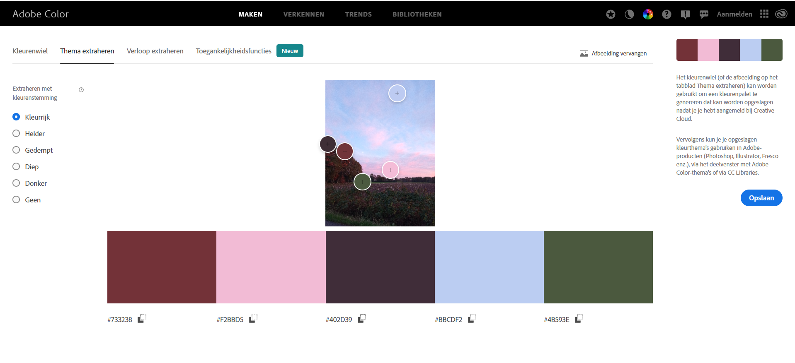

Choosing fonts
Introduction
Choosing the right font is hugely important. A font supports the message
you want to deliver to the reader in 2 ways. On the one hand, a smoothly
readable font is necessary to let the content of your site affect the
surfer properly. On the other hand, the chosen font accentuates who your
site's target audience is.
For a broad target audience, always choose sans serif fonts. These can be
common sans serif fonts such as Arial or Verdana, but thanks to Google
Fonts there is a much larger selection of sans serif webfonts with which
you can make the difference.
On a site you use no more than 2 different fonts. For the majority of
texts you choose a sans serif font that is easy to read. Only for the
titles you can consider choosing a slightly more artistic font, possibly
even a font with serifs or a font that looks handwritten. This is often
done on sites where luxury goods are offered.
Wide audience
Well-crafted typography has the power to capture attention, instill emotion and reinforce your brand message. Choosing a font for your marketing material should never be left to chance—there are a number of strategic considerations to be mindful of in selecting your perfect typeface.(text extract by hubspot)
- Title: Serif
- Other text: Didone
Elegance
There are many clean and elegant Google fonts available for us to choose from. Does it feel overwhelming to scroll through Google’s list of fonts? While it’s great to have such a wide selection, choosing the right fonts can take some time.
The fonts you select should be easy-to-read, match your brand style, and provide an aesthetically pleasing experience for site visitors.(text extract by Natsumi Nishizumi)
- Title: Josefin Sans
- Other text: Sans Serif
Hip
A hipster is a person who stays updated with the latest trends; someone who is hip. Yet another definition for hipster means having a retro or a throwback vibe. Quite confusing, to be honest, but in graphic design and typography, being “hipster” may mean having a unique and somewhat vintage look without being outdated.(text extract by InspirationFeed)
- Title: Fugaz One, Cursive
- Other text: Press Start 2P, Cursive
Choose colors
Introduction
Choosing the right color scheme is necessary to support the "call to
action" of the website. A website for the general public should have
neutral colors, rather dull, but acceptable to everyone worldwide -
regardless of origin, language or culture.
Those who want to emphasize that everything on the site is cheap opt for
accents in bright red, bright yellow and/or bright blue. These colors
stimulate our brain and motivate impulse purchases.
If you want to emphasize timeless elegance and convince (older, richer)
customers to opt for luxury products with a higher price tag, it's best to
use subtle shades of gray.
If you want to appeal to a young audience in particular, you have to find
a connection with the world of that audience. For children it can be very
colorful, for teenagers (and hipsters) a negative design with a black
background.
Choosing colors is an art in itself, you have to learn which colors go
together. 1 golden tip: colors that occur together in nature, always
match. That's why color schemes are often made based on a photo. Thanks to
the photo, the client immediately sees what atmosphere the colors evoke.
You do not need special software or a camera for this. Adobe will help you
for free at color.adobe.com.
Neutral
Neutral usually means without color, but these hues sometimes have faint undertones of blue, gold, peach, pink, tan and yellow.
Neutral colors do not show up on the color wheel. People in fashion, decorating and other professions that use colors prominently refer to neutral colors as earth tones. These colors have a flexibility and visual balance that works in a number of settings. They also have a classic, subtle feel in rooms, clothing and furniture that also make use of bolder and more vibrant colors in their designs.(text extract by Reference)
- Color 1: Peachpuff
- Color 2: Gray
- Color 3: DarkslateBlue
Cheap
The Safely Playing Color Scheme palette has 4 colors which are Mantis (#70D357), Dark Terra Cotta (#DF535B), Deep Lemon (#DFC721) and Maximum Blue (#3EB9CE).
This color combination was created by user Color Man(SchemColors).
- Color 1: Mantis
- Color 2: Dark Terra Cotta
- Color 3: Deep Lemon
Luxury
The Painting Renaissance Color Scheme palette has 6 colors which are Raisin Black (#2E1F1E), Royal Brown (#563C2E), Coffee (#684B31), Dark Vanilla (#D4C89A), Brown Yellow (#CEA663) and Bole (#79462B).
This color combination was created by user Keshav Naidu(SchemColors).
- Color 1: Dark Vanilla
- Color 2: Coffee
- Color 3: Raisin Black
Young
The For The Kids Color Scheme palette has 5 colors which are UFO Green (#35D461), Vivid Yellow (#F9E104), RYB Orange (#F99D07), Blue-Violet (#882FF6) and Picton Blue (#37B6F6).
This color combination was created by user Pallavi(SchemColors).
- Color 1: UFO Green
- Color 2: Blue-Violet
- Color 2: Vivid Yellow
Based on a photo
